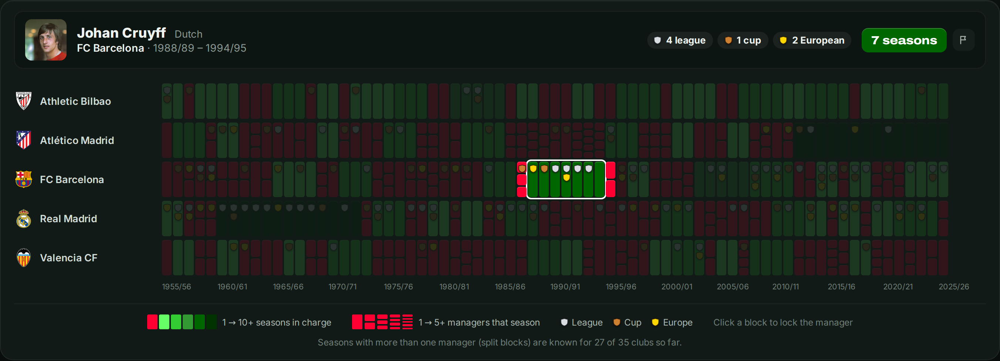
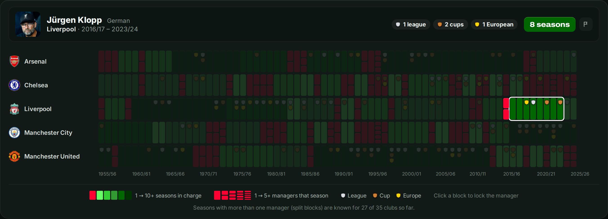
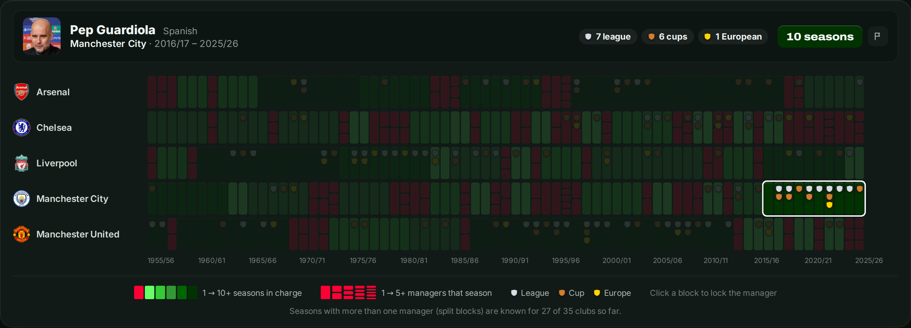

Ideas travel with the people who carry them. Total Football went from Amsterdam to Barcelona, pressing went from Mainz to Liverpool, and each time a manager was the vehicle. Which countries export the most managers to Europe's big clubs, and which leagues let them in?
This article looks at 35 clubs, five in each of seven leagues, from 1955/56 to 2025/26. That is a sample of top clubs, not whole leagues, so the picture says something about the elite rather than about football in each country as a whole.
Who lets foreigners in?
At first sight England is the great melting pot: in 64% of seasons its five clubs were managed by someone who was not English. But much of that is Scottish. Busby, Shankly, Ferguson, Dalglish and Graham alone account for decades of it. Count Scots, Welsh and Irish as local and the English share of foreign managers drops to 31%, close to the rest of Europe.
That makes Spain the most open league in the sample: 51% of its seasons were led by a foreign manager, from Helenio Herrera and Rinus Michels to Johan Cruyff and Hansi Flick. France is the most closed, at 22%, followed by Germany (25%), Italy (28%) and the Netherlands (29%). Portugal sits in between at 36%, with a long tradition of Brazilian and Hungarian coaches.
Data Focus: The Coaching Trade Balance
35 clubs in 7 leagues, 1955/56 to 2025/26. A stint is one uninterrupted reign at a club abroad.
Biggest exporters (stints abroad)
- Argentina 46, half of them in Spain
- Brazil 36, mostly Portugal
- Italy 31, spread out
- England 29, mostly before 2000
- Netherlands 28, Spain and Germany
Share of seasons with a foreign manager
- Spain 51%
- England 64%*
- Portugal 36%
- Netherlands 29%
- Italy 28%
- Germany 25%
- France 22%
* 31% if Scottish, Welsh and Irish managers are counted as local.
Two exporters stand out for reasons that are easy to forget. Argentina tops the list, largely through Spain and Italy, where Helenio Herrera, Alfredo Di Stéfano, César Luis Menotti and later Diego Simeone made their names. And England, now a net importer, used to export: 27 of its 29 stints abroad started before 2000. Vic Buckingham at Ajax and Barcelona, Bobby Robson at PSV, Porto and Barcelona, and Terry Venables at Barcelona all belong to that era.
The Dutch school
For decades Dutch football was a byword for innovation, and the data shows it was also an export product. The story starts with Rinus Michels, who took his ideas from Ajax to Barcelona in the 1970s, and his most gifted pupil, Johan Cruyff, who returned to Barcelona as manager in 1988 and built the "Dream Team". The bond between Ajax and Barcelona that grew out of it still exists.

Louis van Gaal followed him to Barcelona in 1997, straight from his Champions League win with Ajax, and won two league titles; a decade later he won the double with Bayern Munich. Frank Rijkaard led a Barcelona built around Ronaldinho to the Champions League in 2006, Leo Beenhakker won the league with Real Madrid, and Ruud Gullit the FA Cup with Chelsea. Not everyone travelled well. Guus Hiddink won no major trophy at Real Madrid, although he later won the FA Cup with Chelsea, and Ronald Koeman's season at Valencia was turbulent despite a Copa del Rey. The most recent chapter is English: Erik ten Hag won two cups in his first two seasons at Manchester United, and Arne Slot won the league in his first season at Liverpool.
The German pressing wave
If the Dutch taught Europe to keep the ball, the Germans taught it to win the ball back. Earlier German managers had already succeeded abroad: Udo Lattek at Barcelona and Jupp Heynckes, who won the Champions League with Real Madrid in 1998. The modern wave, though, is about pressing, and it came from Mainz and Dortmund.
Jürgen Klopp arrived at Liverpool in 2015, called his style "heavy metal football" and promised to turn doubters into believers. He won the Champions League in 2019 and, in 2020, Liverpool's first league title in thirty years. Thomas Tuchel, who followed Klopp at both Mainz and Dortmund, won the Champions League with Chelsea in 2021, a few months after taking over. Ralf Rangnick, often called the godfather of the style, spent half a season as interim manager of Manchester United. Roger Schmidt won the league with Benfica, and Hansi Flick, after a sextuple with Bayern, won the league twice with Barcelona.

The Italian job: pragmatism as a passport
Italian managers carry a reputation for defensive caution. What the data shows is something else: they adapt. Giovanni Trapattoni won the league in Italy, then with Bayern Munich and with Benfica. Carlo Ancelotti won league titles in Italy, England, France, Germany and Spain, which no other manager has done. Neither exported a system; both exported the ability to find one that suited the players they found.
Spain and Portugal: the new exporters
For a long time Spain exported players rather than managers. That changed around 2000, and above all with Pep Guardiola. Of the 25 Spanish stints abroad in this dataset, 20 started in 2000 or later: Rafael Benítez, who won the Champions League with Liverpool in 2005, Guardiola at Bayern and Manchester City, Unai Emery, Mikel Arteta and Luis Enrique, who took Paris Saint-Germain to its first Champions League in 2025.

Portugal followed the same curve even more sharply: 12 of its 17 stints abroad started after 2010. José Mourinho opened the door, at Chelsea, Inter, Real Madrid and Manchester United. André Villas-Boas, Leonardo Jardim, Nuno Espírito Santo, Paulo Fonseca and Rúben Amorim came after him.
France: great players, few exported managers
France produces world-class players by the dozen, but only eleven French stints abroad appear in the data. The ones that do are remarkable for their loyalty. Arsène Wenger stayed 22 years at Arsenal and reshaped the club. Gérard Houllier won three cups with Liverpool in 2001. Zinedine Zidane won three Champions Leagues in a row with Real Madrid, the club where he had played. Didier Deschamps spent one season at Juventus, guiding them back to Serie A after their relegation. French managers abroad are rare, but they tend to commit to one club.
Shifting tides
Seen over seventy years, the flows follow success. England exported managers when English football was the model, Argentina and Hungary when their schools were admired, the Netherlands after Total Football, Germany after the pressing revolution, and Spain and Portugal after Guardiola and Mourinho. A groundbreaking team creates a blueprint, and clubs abroad go looking for the people who can bring it with them.
How trophies are counted: league titles, national cups and major European trophies, with at most one of each per season, credited to the manager of the season (the one in charge longest, never an interim). Data up to and including 2025/26.
Explore the Data Yourself

Compare clubs, follow a manager from club to club, or highlight one name across a whole league.
Launch the Interactive Visualization